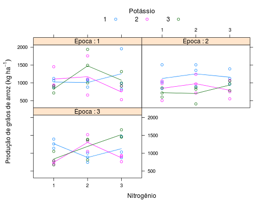

Dados de um estudo em ensaio fatorial 3 \(\times\) 3, referentes à produção de grãos de arroz, em kg ha\(^{-1}\). O delineamento é o de blocos completos ao acaso, com três repetições. Foram testados os efeitos do nitrogênio, potássio e épocas de aplicação destes elementos na produtividade da soca do arroz irrigado.
Um data.frame com 81 observações e 5 variáveis, em que
epocpotanitrblocprodZIMMERMANN (2004), Tabela 9.17, pág. 182.
library(lattice) data(ZimmermannTb9.17)#> Warning: data set ‘ZimmermannTb9.17’ not foundstr(ZimmermannTb9.17)#> 'data.frame': 81 obs. of 5 variables: #> $ epoc: Factor w/ 3 levels "1","2","3": 1 2 3 1 2 3 1 2 3 1 ... #> $ pota: Factor w/ 3 levels "1","2","3": 1 1 1 2 2 2 3 3 3 1 ... #> $ nitr: Factor w/ 3 levels "1","2","3": 1 1 1 1 1 1 1 1 1 2 ... #> $ bloc: Factor w/ 3 levels "1","2","3": 1 1 1 1 1 1 1 1 1 1 ... #> $ prod: num 1066 1022 1138 923 1056 ...ftable(xtabs(~nitr + pota + epoc, data = ZimmermannTb9.17))#> epoc 1 2 3 #> nitr pota #> 1 1 3 3 3 #> 2 3 3 3 #> 3 3 3 3 #> 2 1 3 3 3 #> 2 3 3 3 #> 3 3 3 3 #> 3 1 3 3 3 #> 2 3 3 3 #> 3 3 3 3xyplot(prod ~ nitr | epoc, data = ZimmermannTb9.17, groups = pota, type = c("p", "a"), as.table = TRUE, auto.key = list(title = "Potássio", cex.title = 1.1, columns = 3), strip = strip.custom(strip.names = TRUE, var.name = "Época", sep = " : "), xlab = "Nitrogênio", ylab = expression("Produção de grãos de arroz"~(kg~ha^{-1})))